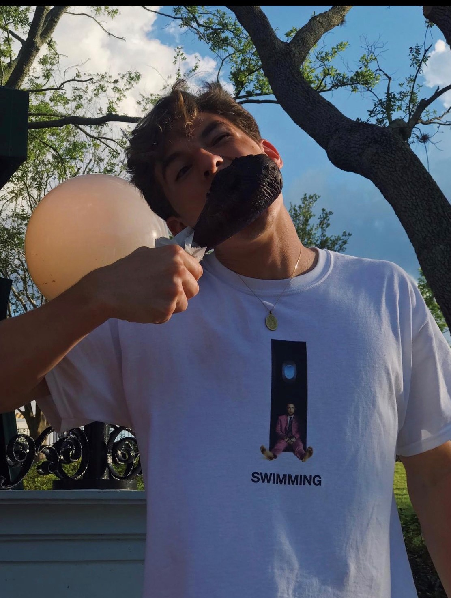

I am from Miami, FL although I was raised in Honduras and the best way to contact me is through my email at: garguello1@babson.edu or Cell: (786)- 491- 6860
I have a dog named Lito along with three siblings, making us an even two guys and two girls in the family.

In the Image above, you can hover over and click on the turkey leg, my T-shirt, or the design in my T-shirt. The Turkey leg will take you to my "Gastronomy" page, the T-shirt graphic will take you to my "Music" page, and my T-shirt alone will take you to my "Fashion" page.